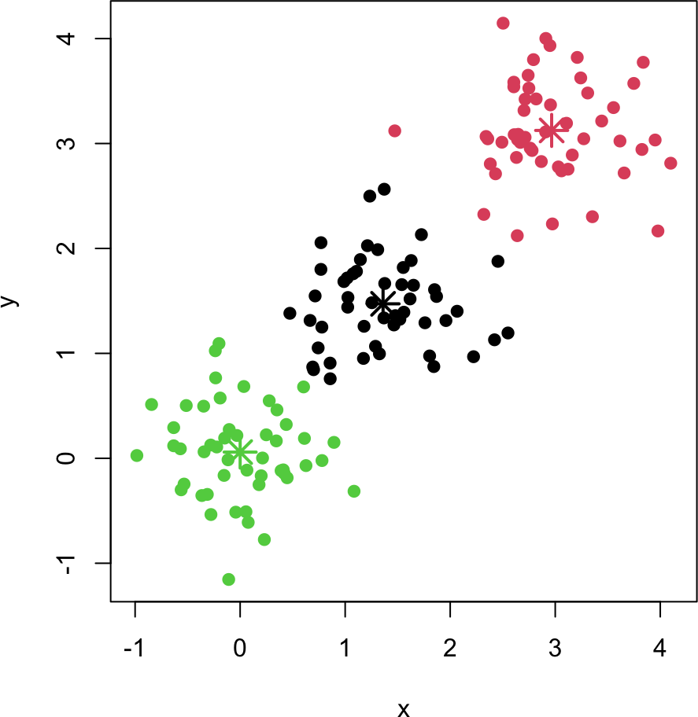
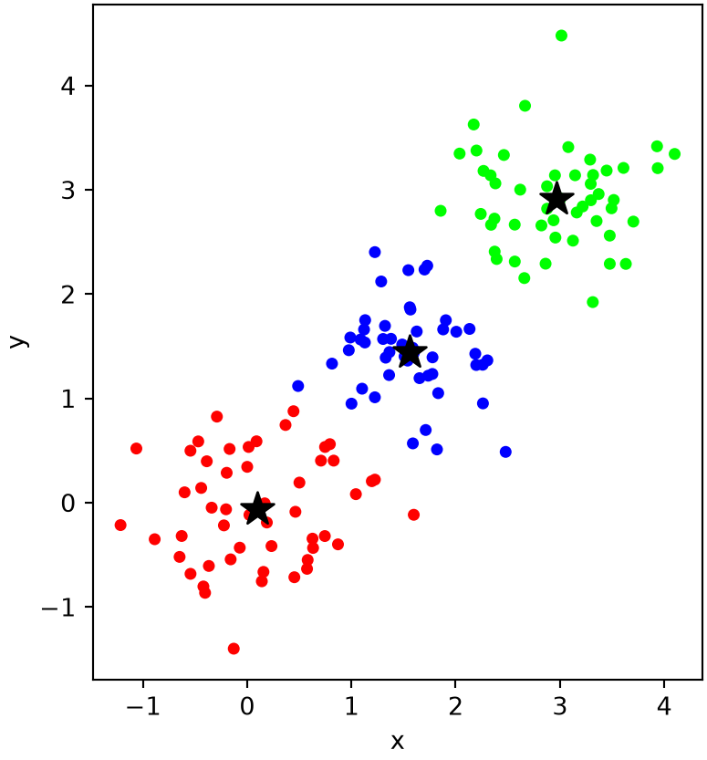
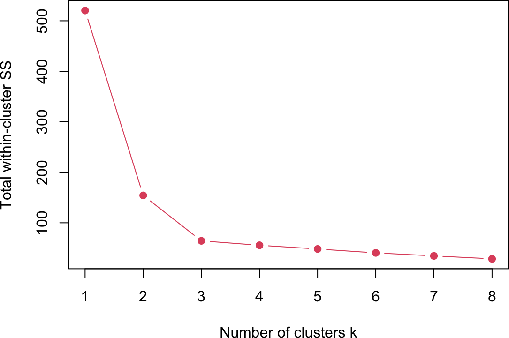
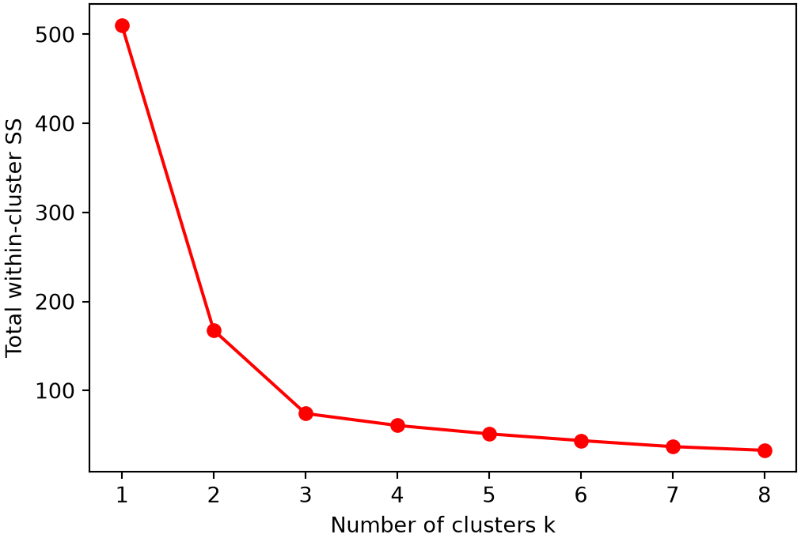
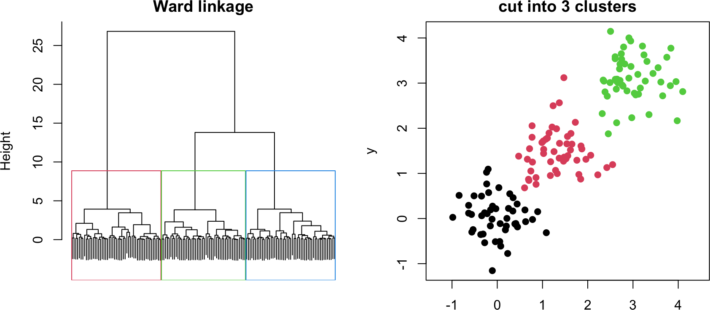
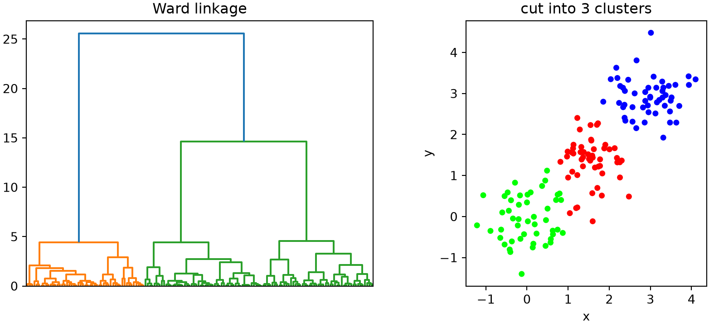
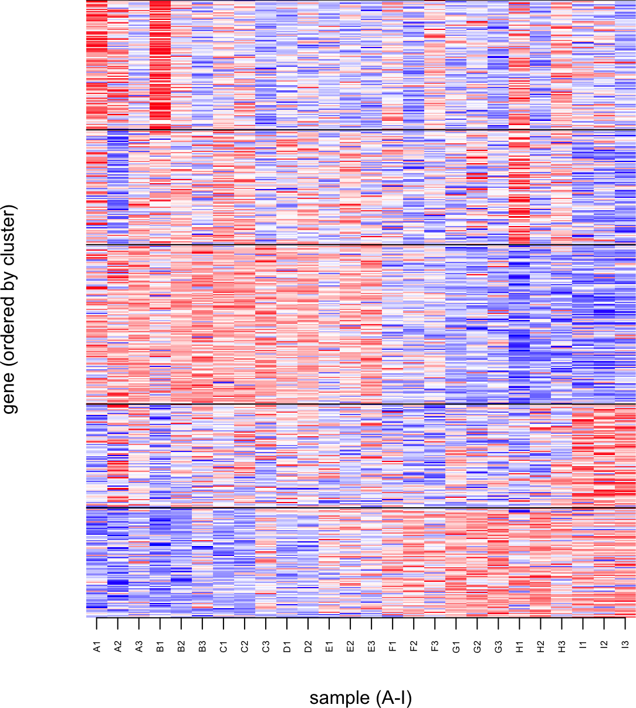
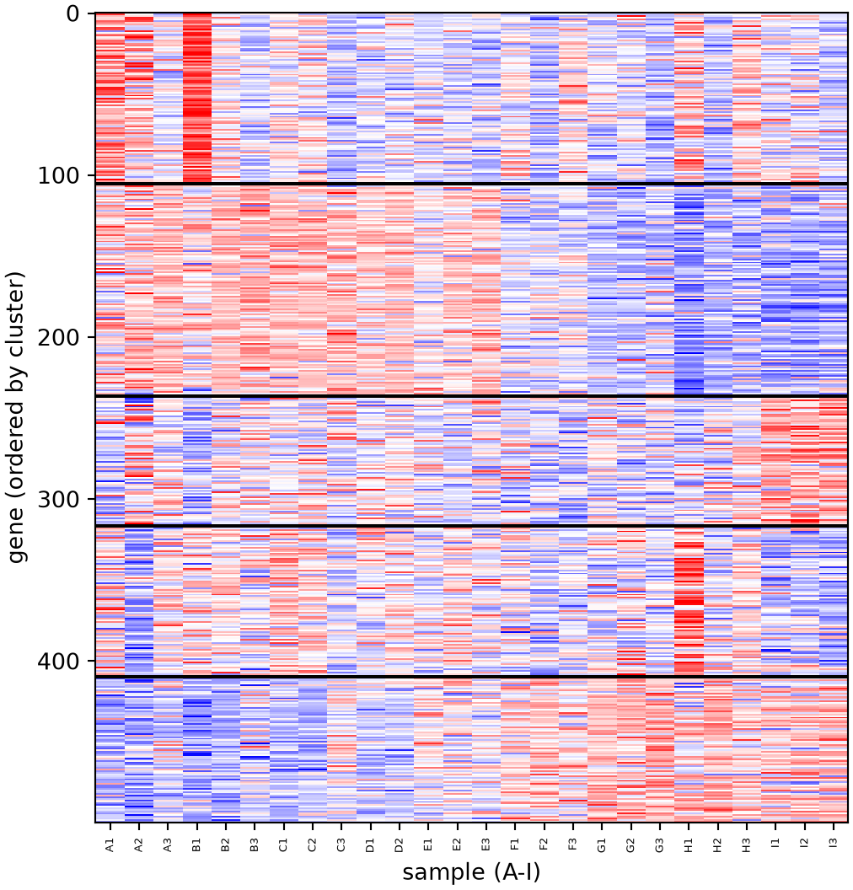
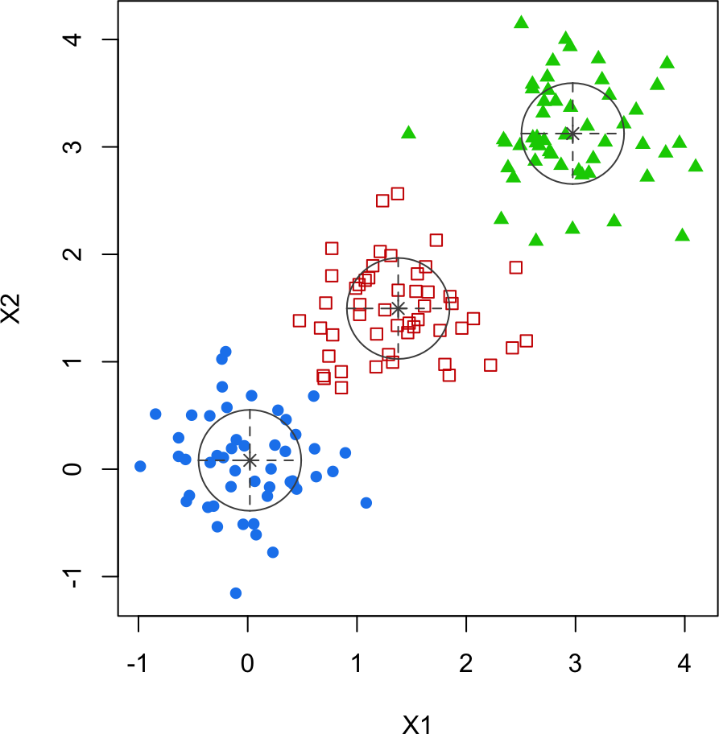
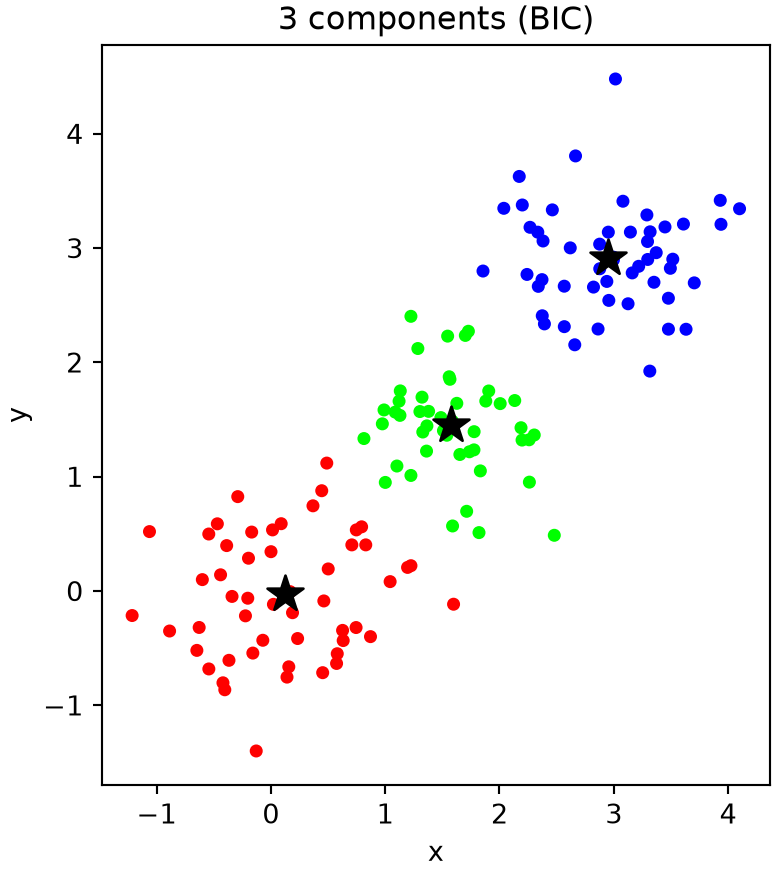

# one k-means run from a random start
kmeans_once <- function(X, k, max_iter = 100) {
centroids <- X[sample(nrow(X), k), , drop = FALSE]
for (iter in 1:max_iter) {
d <- sapply(1:k, function(i) rowSums(sweep(X, 2, centroids[i, ])^2)) # dist^2 to each centroid
clusters <- max.col(-d, ties.method = "first") # nearest centroid
new_centroids <- t(sapply(1:k, function(i) colMeans(X[clusters == i, , drop = FALSE])))
if (sum((new_centroids - centroids)^2) < 1e-10) break
centroids <- new_centroids
}
wss <- sum(sapply(1:k, function(i) sum(rowSums(sweep(X, 2, centroids[i, ])^2)[clusters == i])))
list(clusters = clusters, centroids = centroids, wss = wss)
}
# k-means with several random restarts; keep the best (lowest WSS)
kmeans_cluster <- function(X, k, n_start = 10, max_iter = 100) {
best <- NULL
for (s in 1:n_start) {
r <- kmeans_once(X, k, max_iter)
if (is.null(best) || r$wss < best$wss) best <- r
}
best
}10B. Clustering
Clustering groups data points so that points in the same cluster are more similar to each other than to those in other clusters. It is unsupervised: unlike the labeled conditions in Part 10A, we look for structure without being told the groups. This chapter builds k-means from scratch, shows how to choose the number of clusters, covers hierarchical clustering, applies clustering to the gene-expression data as a heatmap, and ends with a probabilistic (Gaussian mixture) alternative.
10B.1 k-means from scratch
k-means partitions \(n\) points into \(k\) clusters, each represented by a centroid (Lloyd 1982). Starting from random centroids, it alternates two steps until convergence: assign each point to its nearest centroid, then update each centroid to the mean of its assigned points. The result depends on the random start, so we run several restarts and keep the one with the smallest total within-cluster sum of squares (WSS).
NoteRecipe 10B.1.1
Objective. Cluster points into groups with k-means implemented from scratch.
Model. Three Gaussian blobs in 2D (50 points each, at means 0, 1.5, and 3, standard deviation 0.5); the input is an n x 2 point matrix.
Method. k-means clustering (Lloyd’s algorithm): random centroids, then alternating nearest-centroid assignment and centroid-mean updates, keeping the lowest within-cluster sum of squares over several restarts.
Test. k = 3, 10 restarts, up to 100 iterations; seed 123.
Show. A scatter of the points colored by cluster, with the three centroids marked.
Verification. k-means recovers the three blobs, placing a centroid at the middle of each, and the restarts guard against an unlucky initialization converging to a poor split.
R implementation
# three Gaussian blobs
set.seed(123)
X <- rbind(matrix(rnorm(100, 0, 0.5), ncol = 2),
matrix(rnorm(100, 1.5, 0.5), ncol = 2),
matrix(rnorm(100, 3, 0.5), ncol = 2))
res <- kmeans_cluster(X, k = 3)
plot(X, col = res$clusters, pch = 19, xlab = "x", ylab = "y", asp = 1)
points(res$centroids, col = 1:3, pch = 8, cex = 2, lwd = 2)
Python implementation
import numpy as np
import matplotlib.pyplot as plt
# one k-means run from a random start
def kmeans_once(X, k, max_iter=100):
centroids = X[np.random.choice(len(X), k, replace=False)]
for _ in range(max_iter):
d = np.stack([((X - c)**2).sum(1) for c in centroids], 1) # dist^2 to each centroid
clusters = d.argmin(1) # nearest centroid
new = np.stack([X[clusters == i].mean(0) for i in range(k)])
if ((new - centroids)**2).sum() < 1e-10:
break
centroids = new
wss = sum(((X[clusters == i] - centroids[i])**2).sum() for i in range(k))
return {"clusters": clusters, "centroids": centroids, "wss": wss}
# k-means with several random restarts; keep the best (lowest WSS)
def kmeans_cluster(X, k, n_start=10, max_iter=100):
best = None
for _ in range(n_start):
r = kmeans_once(X, k, max_iter)
if best is None or r["wss"] < best["wss"]:
best = r
return best# three Gaussian blobs
np.random.seed(123)
X = np.vstack([np.random.normal(m, 0.5, (50, 2)) for m in (0, 1.5, 3)])
res = kmeans_cluster(X, k=3)
plt.figure(figsize=(5, 5))
plt.scatter(X[:, 0], X[:, 1], c=res["clusters"], cmap="brg", s=15)
plt.scatter(res["centroids"][:, 0], res["centroids"][:, 1], c="black", marker="*", s=200)
plt.gca().set_aspect("equal"); plt.xlabel("x"); plt.ylabel("y"); plt.show()
k-means recovers the three blobs, placing a centroid at the middle of each. The restarts matter: a single unlucky initialization can converge to a poor split, so keeping the lowest-WSS run guards against that. k-means assumes roughly spherical, equal-sized clusters and requires the number of clusters \(k\) in advance.
Choosing the number of clusters
k-means needs \(k\), but we rarely know it. The elbow method runs k-means for a range of \(k\) and plots the total WSS against \(k\). WSS always decreases as \(k\) grows, but it drops sharply until the natural number of clusters is reached and then flattens; the “elbow” marks a good choice.
R implementation
set.seed(1)
wss_k <- sapply(1:8, function(k) kmeans_cluster(X, k)$wss)
plot(1:8, wss_k, type = "b", pch = 19, col = 2, xlab = "Number of clusters k",
ylab = "Total within-cluster SS")
Python implementation
np.random.seed(1)
wss_k = [kmeans_cluster(X, k)["wss"] for k in range(1, 9)]
plt.figure(figsize=(6, 4))
plt.plot(range(1, 9), wss_k, "o-", color="red")
plt.xlabel("Number of clusters k"); plt.ylabel("Total within-cluster SS"); plt.show()
The curve bends sharply at \(k = 3\) and flattens afterward, correctly identifying the three blobs. The elbow is a heuristic, not a rule, but it is a quick and widely used guide.
10B.2 Hierarchical clustering
Hierarchical clustering builds a tree (dendrogram) instead of a flat partition, and does not need \(k\) up front. Agglomerative clustering starts with every point in its own cluster and repeatedly merges the two closest clusters. How “closest” is measured is the linkage: single (nearest pair), complete (farthest pair), average (mean pairwise distance), and Ward (merge that least increases WSS (Ward 1963)). Cutting the tree at a chosen height yields a flat clustering. We use the built-in routines (hclust in R, scipy in Python).
NoteRecipe 10B.2.1
Objective. Cluster points by building a dendrogram instead of a flat partition.
Model. The input is the same three-blob data, via pairwise Euclidean distances.
Method. Agglomerative hierarchical clustering with Ward linkage, cut into a flat partition.
Test. The three-blob data, cut into k = 3 clusters.
Show. The dendrogram, and the points colored by the three cut clusters.
Verification. The dendrogram shows three clear branches, and cutting into three recovers the blobs, agreeing with k-means.
R implementation
d <- dist(X) # pairwise distances
par(mfrow = c(1, 2), mar = c(2, 4, 2, 1))
hc <- hclust(d, method = "ward.D2")
plot(hc, labels = FALSE, main = "Ward linkage", xlab = "", sub = "")
groups <- cutree(hc, k = 3) # cut into 3 clusters
rect.hclust(hc, k = 3, border = 2:4)
plot(X, col = groups, pch = 19, xlab = "x", ylab = "y", asp = 1, main = "cut into 3 clusters")
Python implementation
from scipy.cluster.hierarchy import linkage, dendrogram, fcluster
Z = linkage(X, method="ward") # pairwise distances + Ward linkage
groups = fcluster(Z, t=3, criterion="maxclust") # cut into 3 clusters
fig, axs = plt.subplots(1, 2, figsize=(9, 4))
dendrogram(Z, no_labels=True, ax=axs[0]); axs[0].set(title="Ward linkage")
axs[1].scatter(X[:, 0], X[:, 1], c=groups, cmap="brg", s=15)
axs[1].set(xlabel="x", ylabel="y", aspect="equal", title="cut into 3 clusters")
plt.tight_layout(); plt.show()
The dendrogram shows three clear branches; cutting it into three groups recovers the blobs, agreeing with k-means. Different linkages can give different trees (single linkage tends to chain points together, Ward produces compact clusters), so the choice matters.
10B.3 Clustering the gene-expression data
Applied to the gene-expression data of Part 10A, clustering finds modules of genes that vary together across the conditions. We \(z\)-score each gene (so all genes share a scale), cluster the 500 genes with k-means, and draw a heatmap with the genes ordered by cluster, the canonical way to display expression data.
NoteRecipe 10B.3.1
Objective. Cluster genes by expression and display them as a heatmap.
Model. The input is the gene-expression data (500 genes x 26 samples), z-scored per gene.
Method. k-means clustering of the z-scored genes, shown as a cluster-ordered expression heatmap.
Test. k = 5 clusters; heatmap color scale from -3 to 3; seed 1.
Show. A cluster-ordered heatmap of the gene-expression data.
Verification. The heatmap splits genes into co-expression modules that rise and fall together across the conditions, resolving the PCA progression of Part 10A into specific gene groups.
R implementation
exp_data <- read.csv("10-high-dim-data/data/exp_data.csv", row.names = 1)
Z <- t(scale(t(as.matrix(exp_data)))) # z-score each gene (row)
set.seed(1)
gene_clusters <- kmeans_cluster(Z, k = 5)$clusters
ord <- order(gene_clusters) # order genes by cluster
pal <- colorRampPalette(c("blue", "white", "red"))(50)
image(1:ncol(Z), 1:nrow(Z), t(Z[ord, ]), col = pal, zlim = c(-3, 3),
xlab = "sample (A-I)", ylab = "gene (ordered by cluster)", axes = FALSE)
axis(1, at = 1:ncol(Z), labels = colnames(Z), las = 2, cex.axis = 0.5)
abline(h = cumsum(table(gene_clusters)) + 0.5, col = "black") # cluster boundaries
Python implementation
import pandas as pd
exp_data = pd.read_csv("10-high-dim-data/data/exp_data.csv", index_col=0)
G = exp_data.values # 500 genes x 26 samples
Z = (G - G.mean(1, keepdims=True)) / G.std(1, keepdims=True) # z-score each gene
np.random.seed(1)
gene_clusters = kmeans_cluster(Z, k=5)["clusters"]
ordr = np.argsort(gene_clusters) # order genes by cluster
plt.figure(figsize=(6, 6.5))
plt.imshow(Z[ordr], aspect="auto", cmap="bwr", vmin=-3, vmax=3, interpolation="none")
plt.xticks(range(len(exp_data.columns)), exp_data.columns, rotation=90, fontsize=5)([<matplotlib.axis.XTick object at 0x119b14050>, <matplotlib.axis.XTick object at 0x119b15590>, <matplotlib.axis.XTick object at 0x119b15950>, <matplotlib.axis.XTick object at 0x119b15d10>, <matplotlib.axis.XTick object at 0x119b160d0>, <matplotlib.axis.XTick object at 0x119b16490>, <matplotlib.axis.XTick object at 0x119b16850>, <matplotlib.axis.XTick object at 0x119b16c10>, <matplotlib.axis.XTick object at 0x119b16fd0>, <matplotlib.axis.XTick object at 0x119b17390>, <matplotlib.axis.XTick object at 0x119b17750>, <matplotlib.axis.XTick object at 0x119b17b10>, <matplotlib.axis.XTick object at 0x119b17ed0>, <matplotlib.axis.XTick object at 0x119b8c2d0>, <matplotlib.axis.XTick object at 0x119b8c690>, <matplotlib.axis.XTick object at 0x119b8ca50>, <matplotlib.axis.XTick object at 0x119b8ce10>, <matplotlib.axis.XTick object at 0x119b8d1d0>, <matplotlib.axis.XTick object at 0x119b8d590>, <matplotlib.axis.XTick object at 0x119b8d950>, <matplotlib.axis.XTick object at 0x119b8dd10>, <matplotlib.axis.XTick object at 0x119b8e0d0>, <matplotlib.axis.XTick object at 0x119b8e490>, <matplotlib.axis.XTick object at 0x119b8e850>, <matplotlib.axis.XTick object at 0x119b8ec10>, <matplotlib.axis.XTick object at 0x119b8efd0>], [Text(0, 0, 'A1'), Text(1, 0, 'A2'), Text(2, 0, 'A3'), Text(3, 0, 'B1'), Text(4, 0, 'B2'), Text(5, 0, 'B3'), Text(6, 0, 'C1'), Text(7, 0, 'C2'), Text(8, 0, 'C3'), Text(9, 0, 'D1'), Text(10, 0, 'D2'), Text(11, 0, 'E1'), Text(12, 0, 'E2'), Text(13, 0, 'E3'), Text(14, 0, 'F1'), Text(15, 0, 'F2'), Text(16, 0, 'F3'), Text(17, 0, 'G1'), Text(18, 0, 'G2'), Text(19, 0, 'G3'), Text(20, 0, 'H1'), Text(21, 0, 'H2'), Text(22, 0, 'H3'), Text(23, 0, 'I1'), Text(24, 0, 'I2'), Text(25, 0, 'I3')])for b in np.cumsum(np.bincount(gene_clusters))[:-1]:
plt.axhline(b - 0.5, color="black") # cluster boundaries
plt.xlabel("sample (A-I)"); plt.ylabel("gene (ordered by cluster)"); plt.show()
The heatmap splits the genes into co-expression modules: each block of rows is a set of genes that rise and fall together across the A-to-I conditions. Some modules are high in the early conditions and low in the late ones, others the reverse, reflecting the same gene-expression progression seen in the PCA of Part 10A, now resolved into the specific groups of genes that drive it.
10B.4 Gaussian mixture models
k-means assigns each point to exactly one cluster (a hard assignment) and assumes spherical clusters. A Gaussian mixture model (GMM) is a probabilistic alternative: it models the data as a mixture of Gaussian components with their own means, covariances, and weights, fit by the expectation-maximization algorithm (Dempster et al. 1977), and gives each point a probability of belonging to each cluster (a soft assignment). Because each component has its own covariance, a GMM can capture elongated, tilted clusters that k-means cannot, and model selection (via the BIC) can choose the number of components automatically. We use mclust (Scrucca et al. 2016) in R and scikit-learn in Python.
NoteRecipe 10B.4.1
Objective. Cluster points with a Gaussian mixture and pick the number of components automatically.
Model. A Gaussian mixture: the data modeled as a mixture of Gaussian components, each with its own mean, covariance, and weight, with soft assignments; the input is the three-blob data.
Method. Gaussian mixture models fit by expectation-maximization, with the number of components chosen by the Bayesian information criterion.
Test. The three-blob data, choosing among 1 to 6 components; seed 1.
Show. A scatter of the points colored by mixture component, and the BIC versus number of components.
Verification. The criterion selects three components matching the blobs, and the mixture recovers them with soft probabilities.
R implementation
library(mclust)
gmm <- Mclust(X, verbose = FALSE) # BIC picks the number of components
plot(gmm, what = "classification")
cat("components chosen by BIC:", gmm$G, "\n")components chosen by BIC: 3 Python implementation
from sklearn.mixture import GaussianMixture
# choose the number of components by BIC
models = [GaussianMixture(n, covariance_type="full", random_state=1).fit(X) for n in range(1, 7)]
bic = [m.bic(X) for m in models]
gmm = models[int(np.argmin(bic))]
labels = gmm.predict(X)
plt.figure(figsize=(5, 5))
plt.scatter(X[:, 0], X[:, 1], c=labels, cmap="brg", s=15)
plt.scatter(gmm.means_[:, 0], gmm.means_[:, 1], c="black", marker="*", s=200)
plt.gca().set_aspect("equal"); plt.xlabel("x"); plt.ylabel("y")
plt.title(f"{gmm.n_components} components (BIC)"); plt.show()
The BIC selects three components, matching the blobs, and the GMM recovers them with soft probabilities rather than hard labels. For these well-separated spherical blobs the GMM and k-means agree, but the GMM is the more flexible model: its per-component covariances let it fit clusters of different shapes and sizes, and its probabilistic assignments quantify how confidently each point belongs to its cluster.